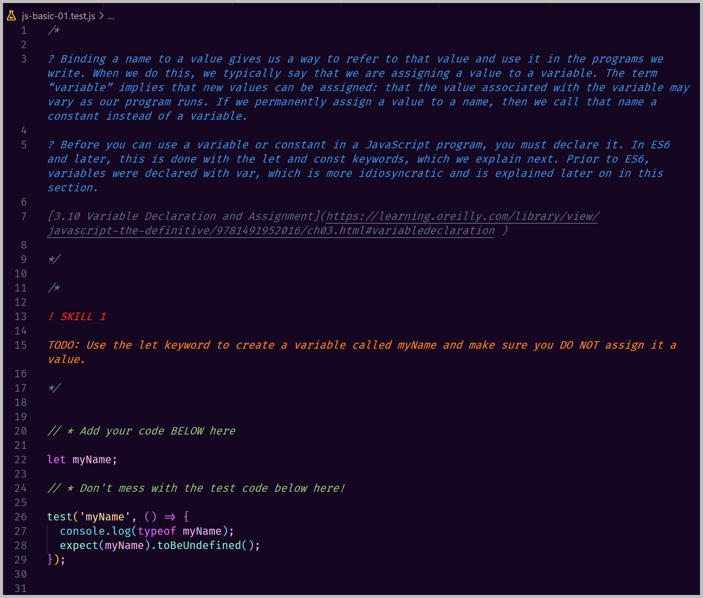

This assignment has you writing code that implements your expected JavaScript skills at this point.
These concepts are covered in Chapter 3 of your textbook.
In addition, in this assignment you'll be introduced to the following modern web development practices:
As brain scientists are discovering, learning to program may require both the language areas of the brain and what they call multiple demand systems that are spread throughout the frontal and parietal lobes of the brain. These multiple demand systems are activated when we need to hold many pieces of information in mind at once.(To the Brain, Reading Computer Code Is Not the Same as Reading Language)
Remember this as you go through these coding exercises. Deciding how to solve a coding problem can be compared to solving a puzzle. Have paper and pencil beside you and don't be afraid to doodle questions to yourself, outline the problem with pseudocode, write out candidate skills from the above list and write out candidate code before trying it out in VS Code.
What is pseudocode, you ask. Don't ask me.
Google it! If you are not a good googler, Google search "How to
Google search JavaScript solutions" and see what you learn.
You know that "Googling" is one of the top 5 skills for web developers?
— Nick Bull (@nickbulljs) January 31, 2021
Here 7 tips to master it
↓
Read this short intro to unit testing and Jest.
https://www.testim.io/blog/best-unit-testing-framework-for-javascript/
In this assignment you'll be given a series of coding skills to master. Inside the given JavaScript files, I have put in the Jest tests. You will do the assignment by adding the required code and when you run Jest, it will give you feedback as to whether your code is correct.
You are welcome (actually encouraged) to read the test code but you should not change it.
JavaScript comments has no built-in formatting. On the one hand, this is great as it is only plain text. On the other hand, it is hard for a comment writer to convey special information. The VS Code extension called Better Comments by Aaron Bond can display comments in different colors. With this extension installed, you'll see that the comments in your given JavaScript files are color coded for improved readability.
In the below example, the comments are color coded:

In this repo I am giving you a whole lot of files. As they are meant for configuration, most of these you do not have to touch. You are encouraged to open them in your editor to see what they are doing.
Give me a truthful estimate of the time you took on this project.
Is there anything you liked or disliked about this assignment? Feel free to discuss both your likes and dislikes (just make sure I can tell which is which 😉).
How could this assignment be improved?
When you have completed the assignment, submit a word document with the following:
Upload your word document to submit this assignment.